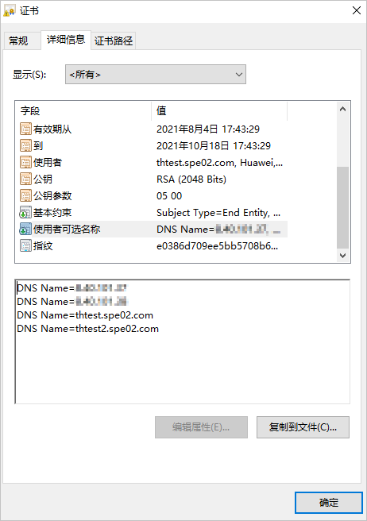

证书导入功能可以实现证书更新。
背景信息
服务端证书用于保证OceanCyber专用备份存储接受外部访问请求时的通信安全性。内部通信证书及内部数据库证书仅用于保证OceanCyber专用备份存储内部各组件之间的内部通信安全性。
注意事项
为保证使用多个控制器管理IP或域名访问系统时的安全性，请确保证书请求文件中包含多个控制器的域名或管理IP信息。从CA机构获取证书文件后，在Windows操作系统中，打开证书文件，在“详细信息”页签，查看“使用者可选名称”是否包含了多个控制器的域名或管理IP信息。如下所示，表示thtest.spe02.com和thtest2.spe02.com可被安全访问。此处thtest.spe02.com和thtest2.spe02.com为示例，仅供参考。

操作步骤
- 选择“系统 > 安全 > 证书”。
- 单击某个证书所在行右侧的“更多”。
- 服务端证书/内部通信证书/内部数据库证书
- 选择“导入证书”。
- 设置证书信息。
参数说明如表1。
表1 证书参数说明 参数
说明
备注
CA证书
单击
 ，选择需要导入的证书对应的CA证书文件。说明：
，选择需要导入的证书对应的CA证书文件。说明：- 导入的CA证书文件大小不能超过1MB。
- 导入的CA证书文件内容必须为x.509格式，且文件后缀必须为“.pem”。
- 如果CA证书文件不是根CA证书文件，请添加证书链文件。制作证书链文件的详细操作，请参见制作证书链文件。服务端证书最大支持3级CA。
- 内部通信证书/内部数据库证书仅支持1级CA。
适用的证书类型：
- 服务端证书
- 内部通信证书
- 内部数据库证书
服务端证书
单击
 ，选择需要导入的服务端证书文件。
，选择需要导入的服务端证书文件。适用的证书类型：
- 服务端证书
- 内部通信证书
- 内部数据库证书
服务端私钥
单击
 ，选择需要导入的服务端证书文件对应的私钥文件。
，选择需要导入的服务端证书文件对应的私钥文件。如果服务端证书是通过从OceanCyber 300 数据安全一体机导出的请求文件在CA机构签发生成的证书，不需要配置该参数。
说明：- 私钥文件大小不能超过1MB。
- 私钥文件后缀必须为“.pem”。
- 私钥文件必须为加密私钥文件。如果您的私钥文件为明文私钥，请参见加密明文私钥文件进行操作。
适用的证书类型：
- 服务端证书
- 内部通信证书
- 内部数据库证书
服务端私钥密码
导入服务端私钥文件对应的密码。
如果服务端证书是通过从OceanCyber 300 数据安全一体机导出的请求文件在CA机构签发生成的证书，不需要填写该参数。
[取值范围]
长度范围为1~512位。
说明：对于内部通信证书，要求密码长度为8~64位，包含数字、大写字母、小写字母和特殊字符。
适用的证书类型：
- 服务端证书
- 内部通信证书
- 外部证书
- 服务端证书/内部通信证书/内部数据库证书
- 单击“确定”。